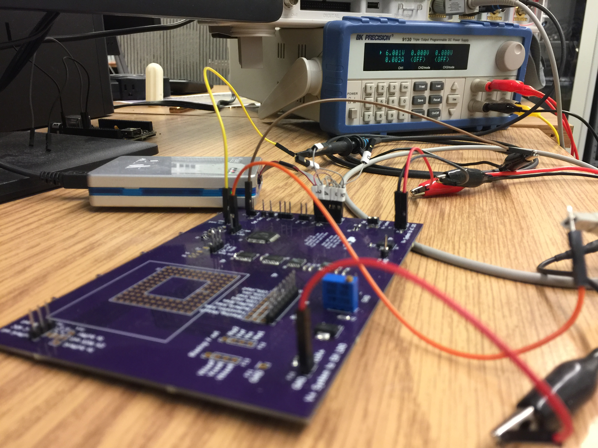
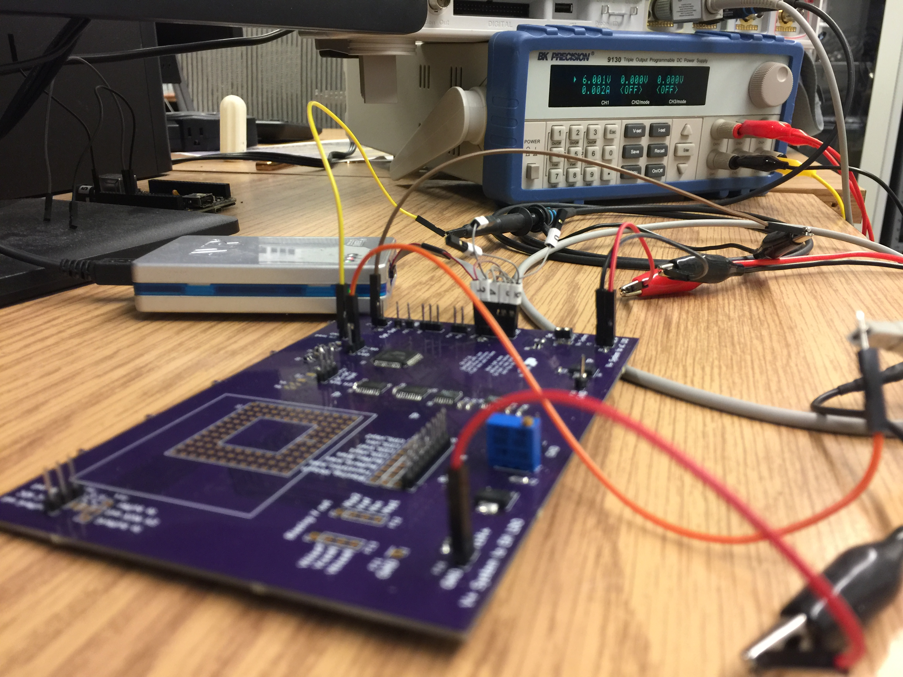
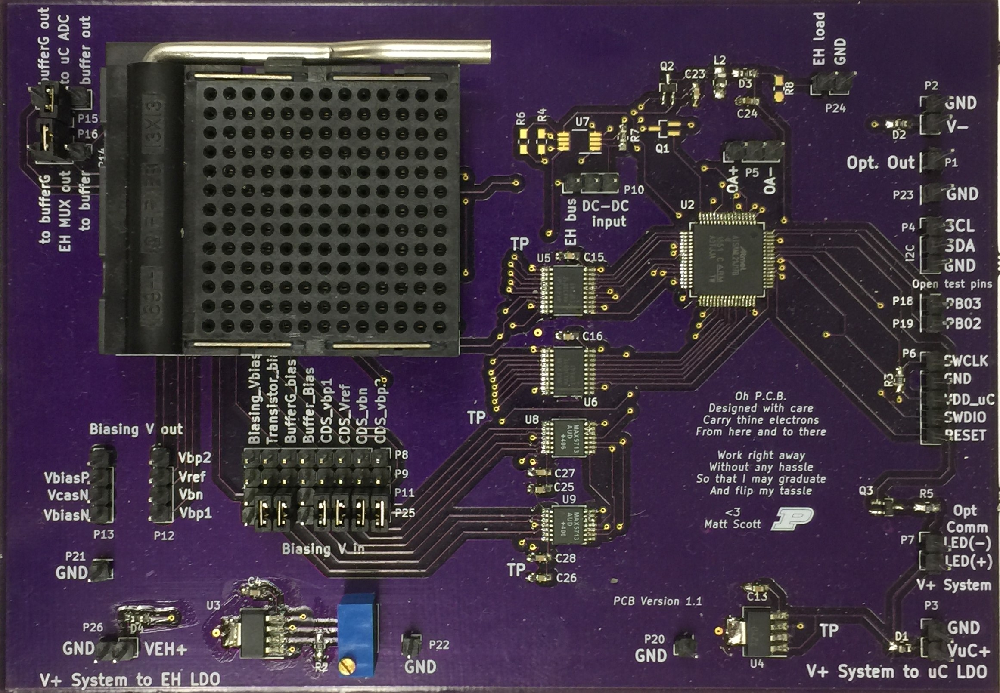
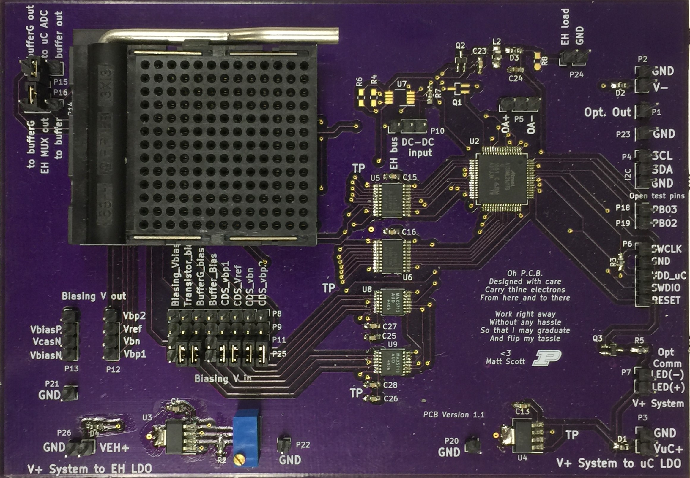
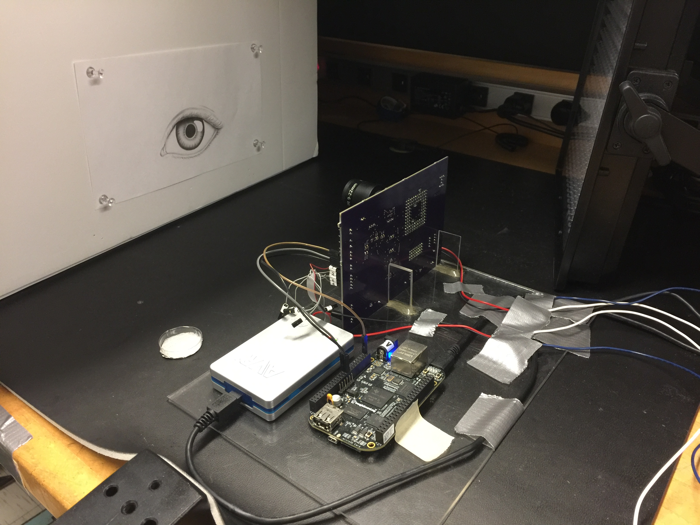
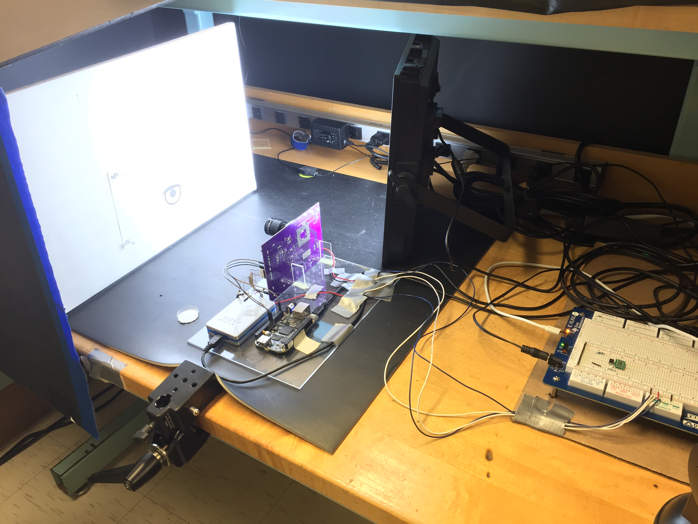
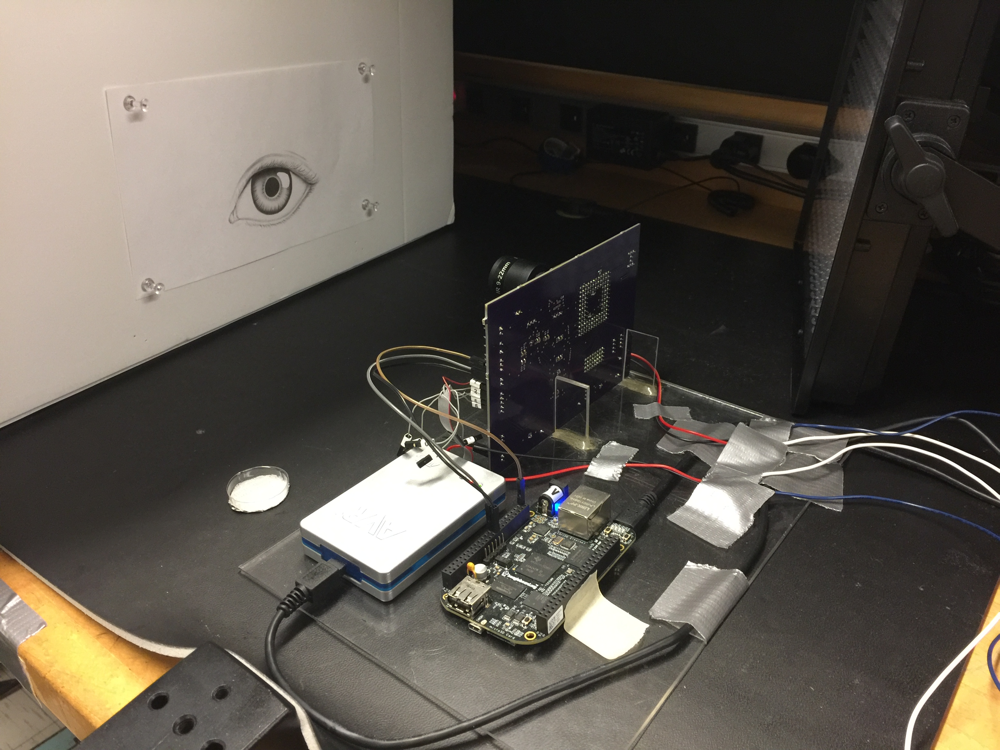
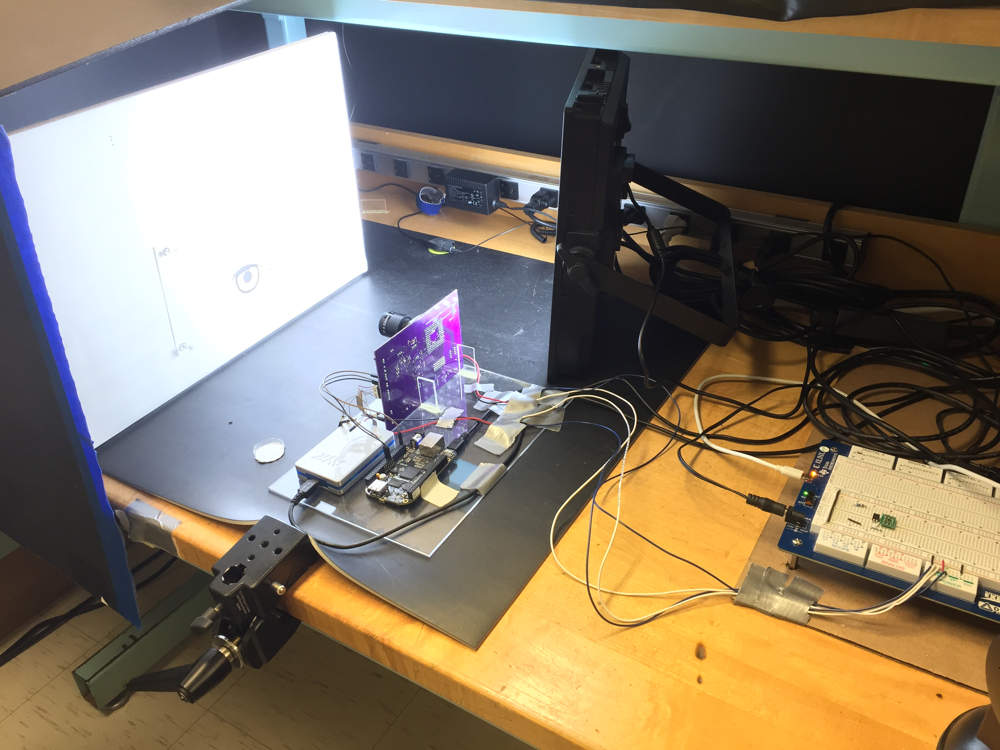

Imager Test Platform
Directed Project (Thesis), Purdue
My Masters at Purdue culminated in a research project involving a self-powered imaging chip. The chip, designed and fabricated by a previous graduate student, could harvest energy through the same pixels with which it took images. I was tasked with developing a test platform to control and read out the imaging chip. The microcontroller unit (MCU) at the platform's core was an Atmel SAML21 32 bit MCU. I designed the platform to allow easy access to important signals. The design facilitated debugging using electronic test equipment such as oscilloscopes and multimeters.
I researched printed circuit board (PCB) design techniques to reduce electromagnetic interference (EMI) on the platform PCB. After careful layout of the board, the design was sent to Osh Park for manufacturing. Upon receipt of the manufactured board, I soldered and tested functional component blocks sequentially to verify platform operability.
After verification of each of the platform's functional blocks, I tested the ability of the MCU to generate the timing signals necessary to control the imager chip. The signals were tested with a logic analyzer. I also successfully generated and tested a model to estimate the duration of the timing signal sequence. Finally, I tested the ability of the platform to capture an image from the imager chip.
The project was summarized in a thesis document and defended orally in front of a committee of professors. The platform will be used for future experimentation with the imager chip. Recommendations for future development of the project were made.
Design
- Review literature pertinent to the area of research and project scope
- Define and agree upon project scope and research questions with advising professor
- Study and interpret existing schematics and code to gain system expertise
- Collaborate with professor to determine test platform functionalities
- Design and revise top level block diagram of system to aid in schematic capture and communication efforts with professor (Microsoft Visio)
- Design a schematic for the test platform (KiCad)
- Design and fabricate a PCB for the test platform, utilizing best practice PCB design techniques(KiCad)
Testing
- Design a test methodology to ensure functional block operability
- Execute test plan and record and interpret data to verify functional block operability (oscilloscopes, power supplies, multimeters, PC terminal, MATLAB)
- Write code in C for an Atmel SAML21 microcontroller unit
- Write code in MATLAB
- Develop and test model to estimate timing of signals generated by the MCU
- Troubleshoot and test the platform's ability to acquire an image from the imager chip
- Deliver final documentation of completed project to professor
- Defend project in an oral presentation in front of committee of professors
- Identify key areas of future development for the project
{kind=link}
{kind=link}
{kind=link}
{kind=link}
{kind=link}


 

{kind=link}
 

{kind=link}
 



{kind=link}
{kind=link}